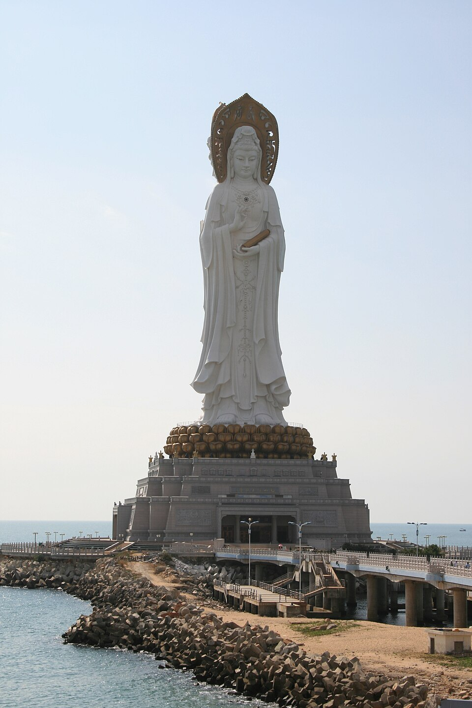
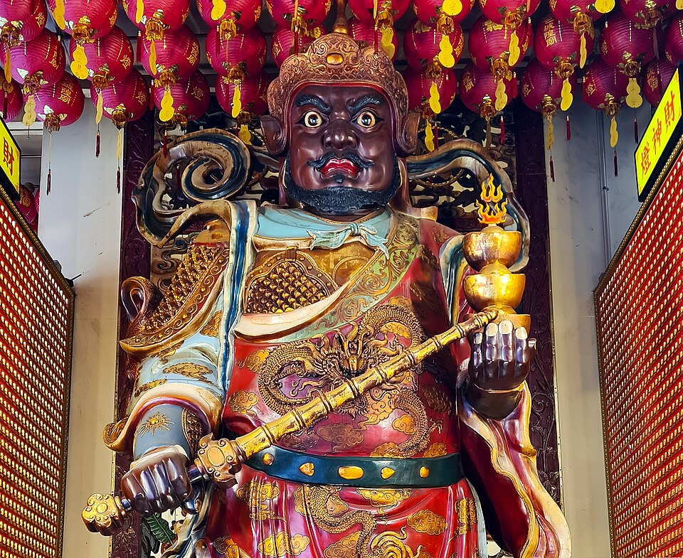
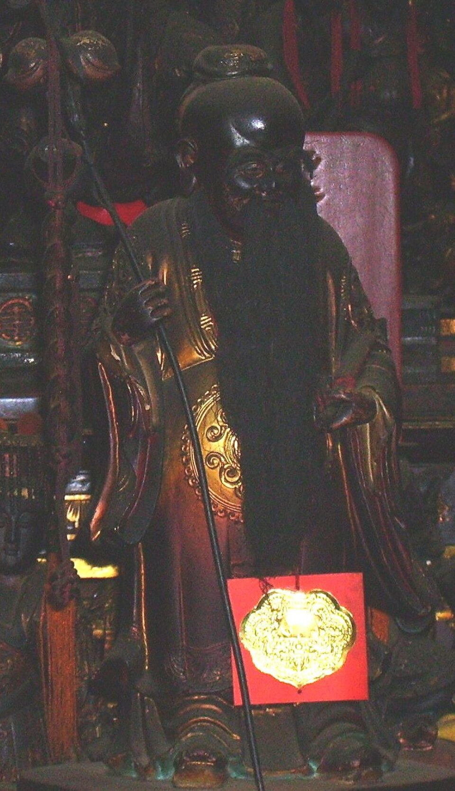
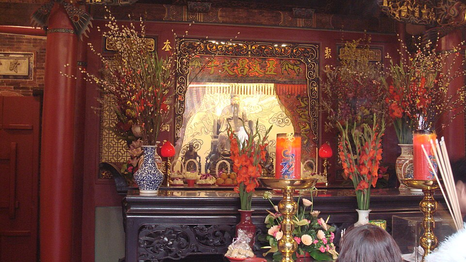
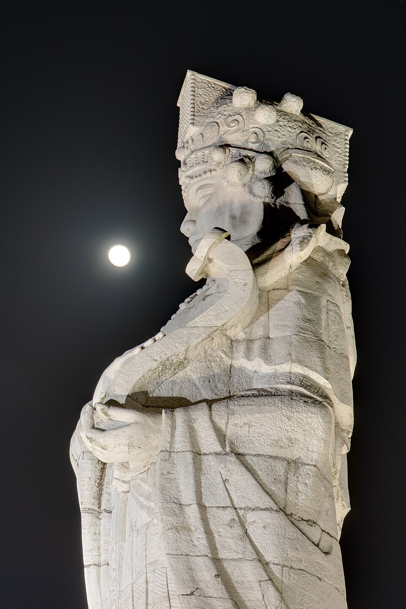

Guanyin Final
净瓶、杨柳、满月、莲台都已经成立，识别度最稳。
这次不再讨论“像不像网页概念图”，直接锁定你要的质感：像中国动画电影里出场的神明，有 3D 体积、神性光、衣袍流动、法器发光、云雾粒子，不是平面 icon，不是游戏低模。
净瓶、杨柳、满月、莲台都已经成立，识别度最稳。

红金权柄感更强，官帽、须髯、元宝与财富法器都更明确。

老神仙感、红线轨迹、月下姻缘氛围已经拉起来了。

文冠、毛笔、卷轴和星轨文气最完整，文神识别最清楚。

天后冕冠、海港、灯塔和海神护佑感已经明显区别于观音。

净瓶、杨柳、垂直神性构图。

官帽、须髯、权柄压场。

老者面相、姻缘主持感。

文运神像、清冷秩序感。

冕冠、海神庇护与仪典感。
我要借鉴的不是某一部动画角色本身，而是现代中文 CG 神话动画的视觉语言： 体积光、半透明云气、金属与玉石材质、丝绸刺绣、缓慢镜头、神圣出场感。
你要的“像神仙”，第一眼必须先像这种庄重、垂直、净瓶杨柳明确的神像。
财神的权威感不是靠金色特效堆出来，是官帽、须髯、法器和正面压场姿态先成立。
月老一定要有老者、红缘、姻缘册和慈祥但不幼态的命缘主持感。
文昌不是普通书生，是掌文运、考试、文气秩序的神像，所以冠饰与供奉场域很重要。
妈祖要有冕冠、垂旒、云肩和海上护佑感，不能画成普通海洋系女神。
财神、妈祖冠饰、法器边缘必须有金属真实反光和重量。
观音不能是布偶白，要像瓷、玉、月光混合后的静态神性。
月老的红不是俗艳红，要像夜色下发光的丝线和灯火。
文昌要有夜读星象的感觉，光是冷静的，不是热烈的。
妈祖的蓝不是海洋清新风，是护航时的夜海、雾灯、浪头反光。
这张的目标不是漂亮，而是“神圣又安静”。人物几乎不动，动的是水雾、柔光、柳叶和袖摆。
这张要像一位真正“管财富流动”的神，不是节庆吉祥物。重点是权柄、厚重、金属感和迎面而来的气场。
她的识别结构最完整：净瓶、杨柳、莲意、月光、水雾、静定面相。只要第一张做对， 整个产品的“神圣感”就能立住。
神像重点：净瓶、杨柳、月白长袍、莲意底座。
特效重点：水雾、月晕、细碎光珠、柔和反射。
像哪种动画镜头：神明静止站立，风和雾在动。
神像重点：官帽、长须、财榜、厚袍、正面权威。
特效重点：鎏金光、火纹、宝气、金属高光。
像哪种动画镜头：神像出场带压迫感和财富气场。
神像重点：红线、姻缘簿、老者慈颜、暖灯。
特效重点：丝线流光、灯笼虚化、月辉边缘光。
像哪种动画镜头：红线自己在空气里生长和缠绕。
神像重点：星冠、书卷、文笔、夜色书生气。
特效重点：墨迹粒子、星轨、冷色神光、纸页发光。
像哪种动画镜头：安静，但四周的星象在运转。
神像重点：冕冠、垂旒、云肩、海灯、船意象。
特效重点：夜海雾灯、潮湿反光、风压布料、航海光标。
像哪种动画镜头：她一出现，风浪像被安抚下来。
目的：先把“神性、庄重、疗愈、材质高级”立住。这一张决定整个产品是不是像数字神龛，而不是玄学小玩具。
目的：验证第二种极端气质能否成立。观音负责静，财神负责压场。两张做对，五位神仙的世界观就能定型。